Fly anywhere
Take off from your base, climb to orbit, cross the void and land on another world with the same ship and the same view, without a single loading screen. The Moon, Mars, Titan and the rest of the solar system, 219 other star systems, and twelve other galaxies.
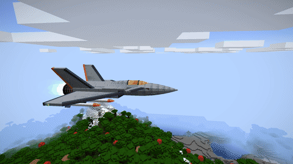
Ships for every job
Capsules, shuttles, explorers, planes, rockets and staged rockets, up to the Terminator, a 546-block ship of the line you can pilot and walk inside. Press X to drop a stage.
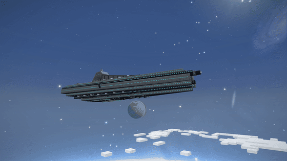
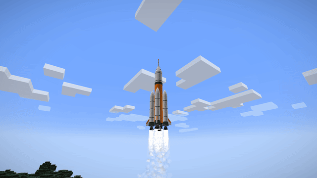
Build them on a shipyard
Pick a ship from the berth's catalogue: a full-size hologram appears, and the ship rises in five stages as you deliver the parts.
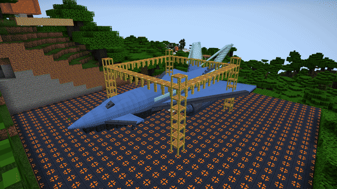
Black holes
Six kinds of black holes, and three one-of-a-kind giants: the Eye of Erebus, Khaos and Apeiron, whose horizon spans 32 km. Fall into one without a ship, and you will be spaghettified.
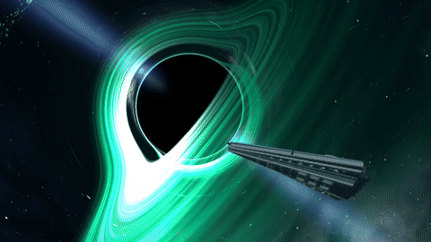
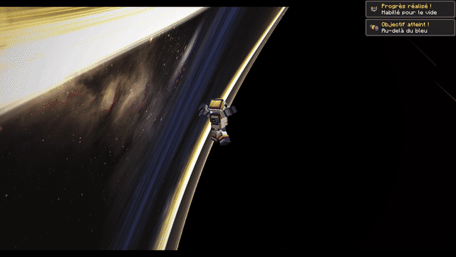
Titan and its giants
Dune seas, ice highlands and methane lakes under an orange haze, and three giants: the Strider, herds of Mastodons, and the Colossus, asleep until you come too close.
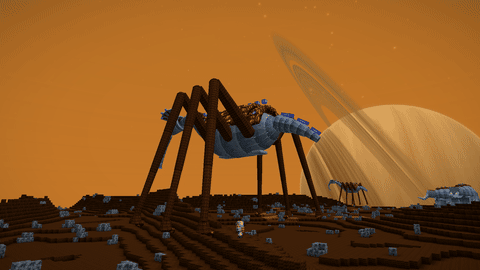
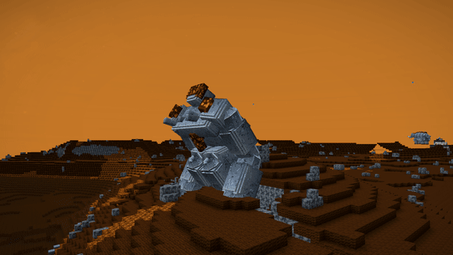
A restless sky
Solar storms and auroras, a red giant that goes supernova, and Dyson spheres you build around any star.
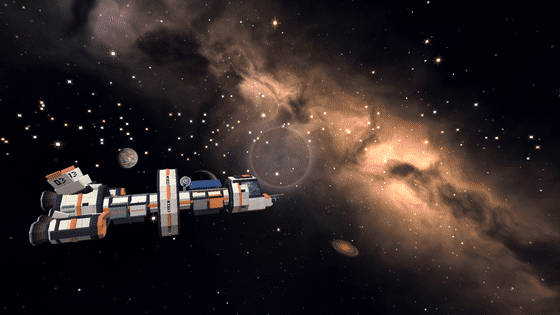
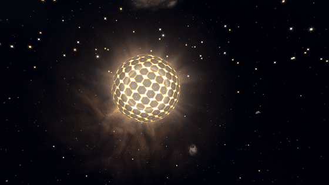
Gallery
In-game screenshots.


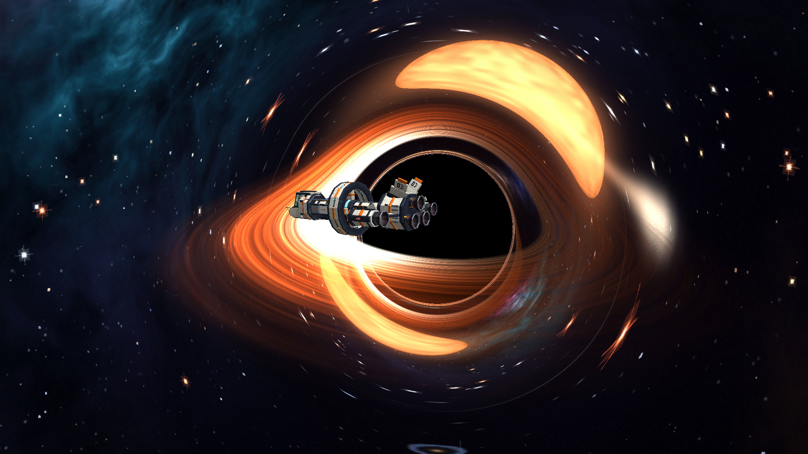

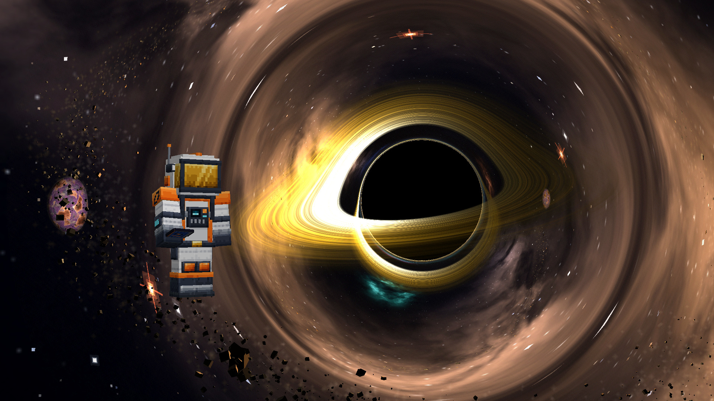

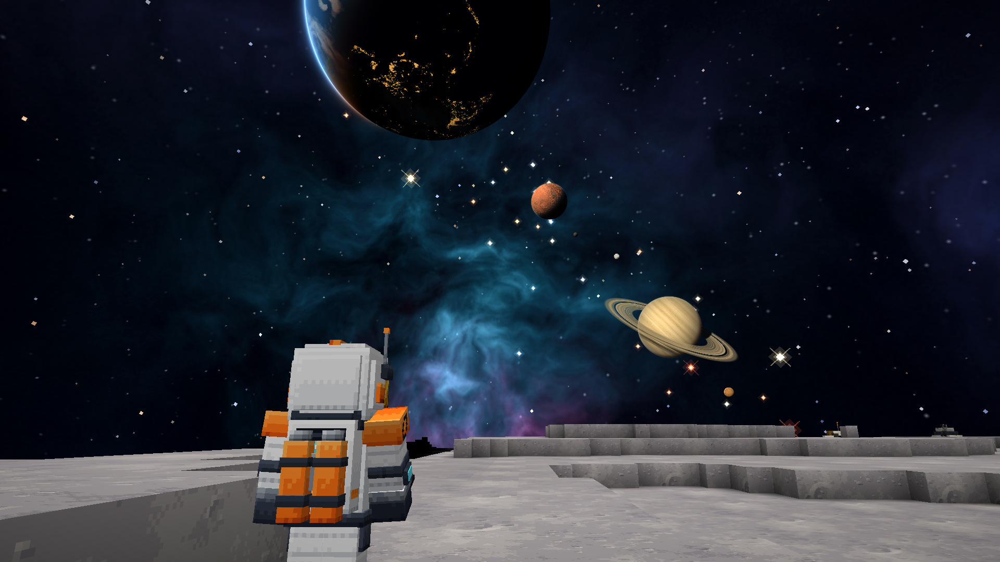


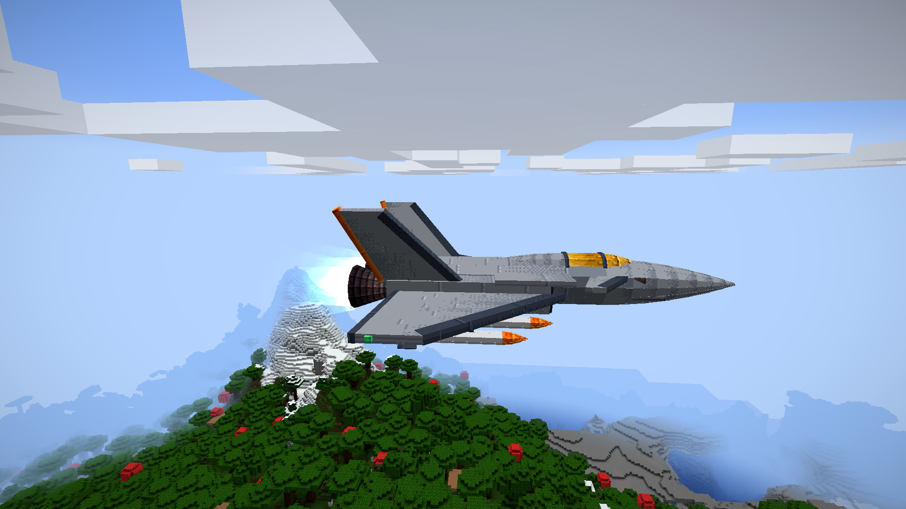

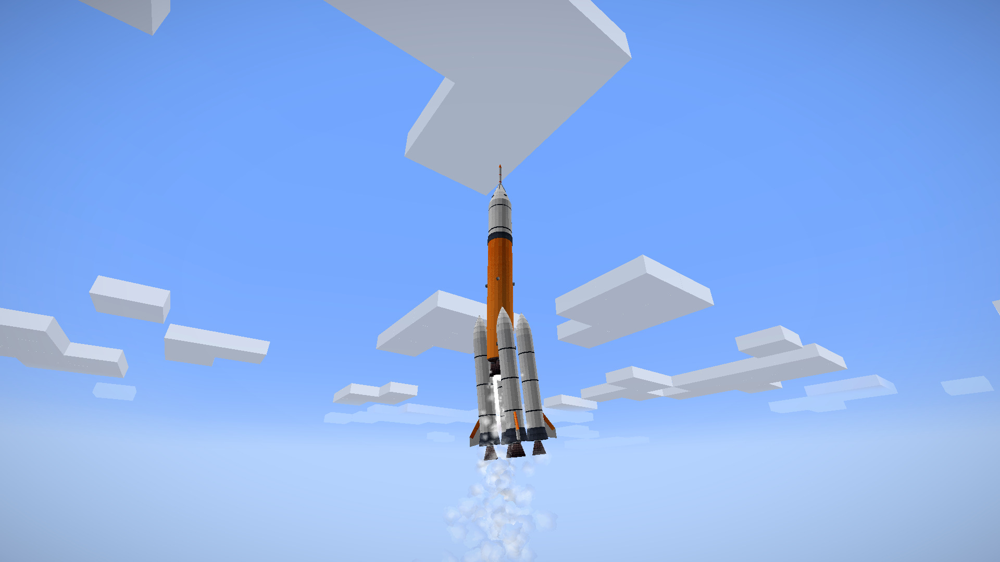

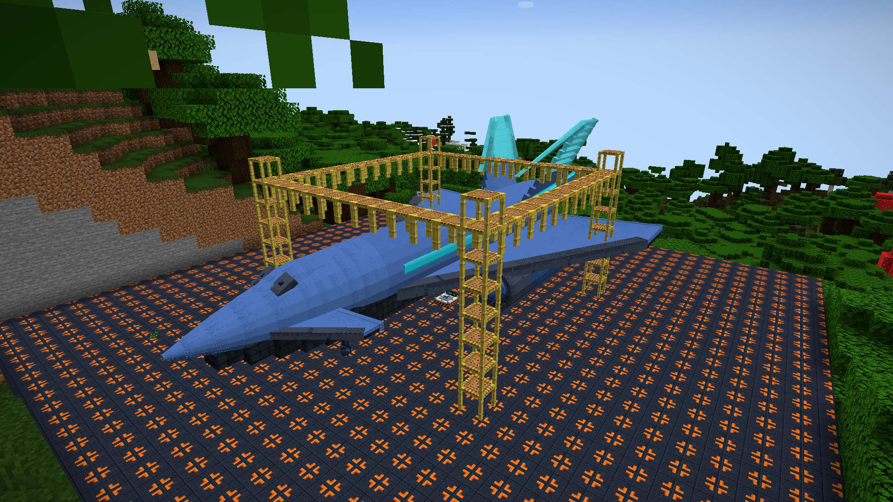

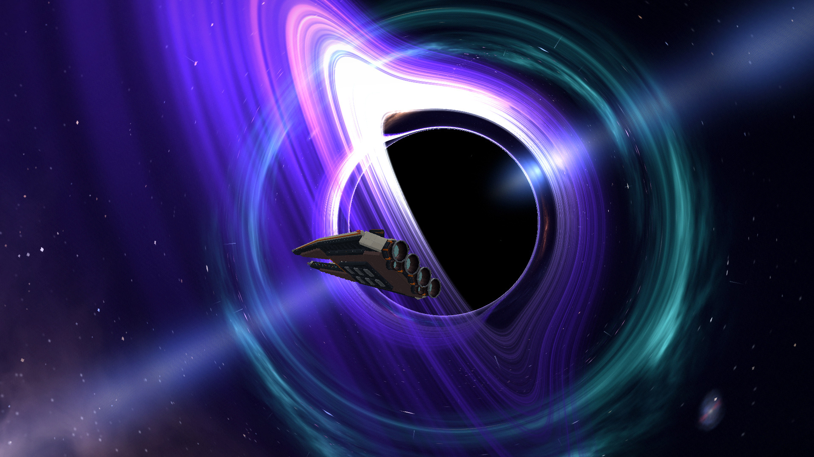


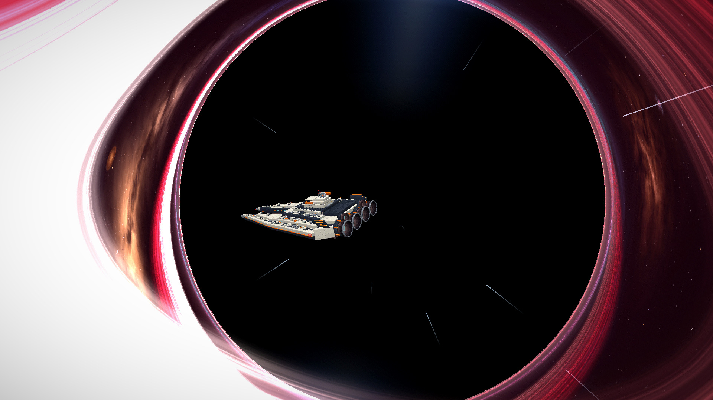

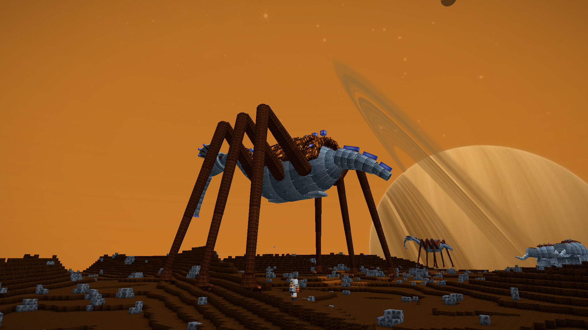

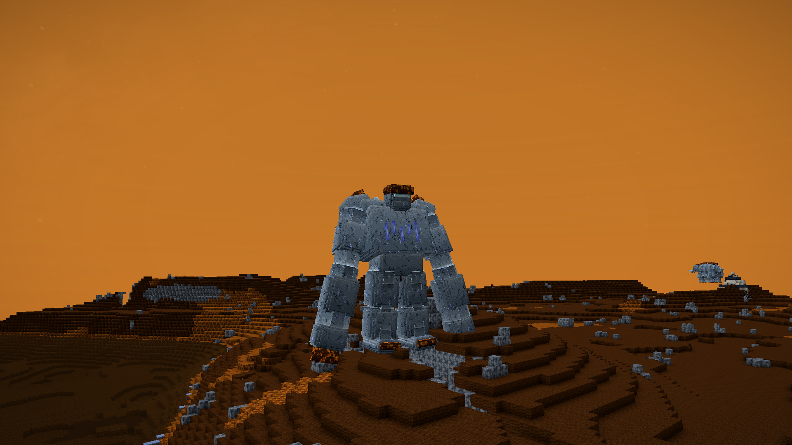

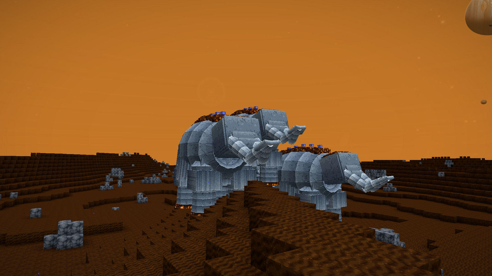


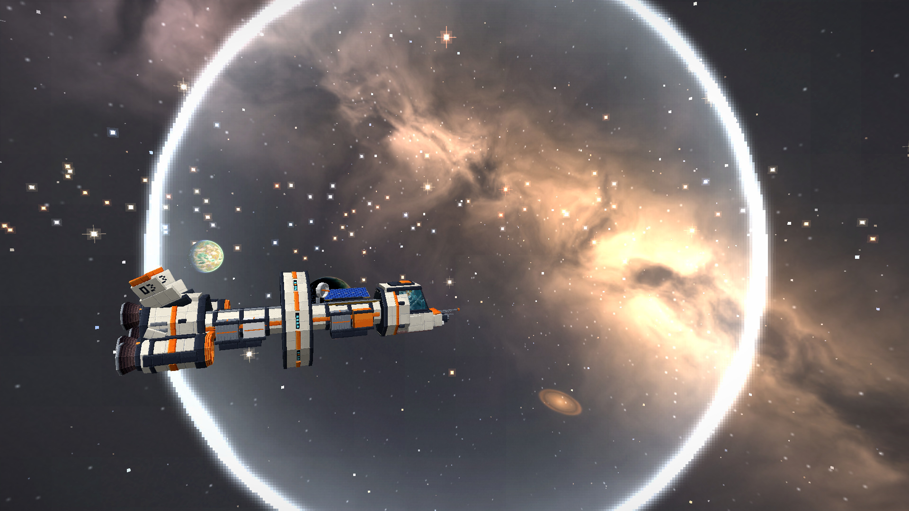

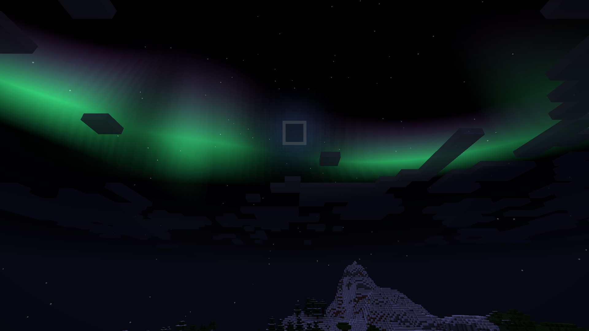

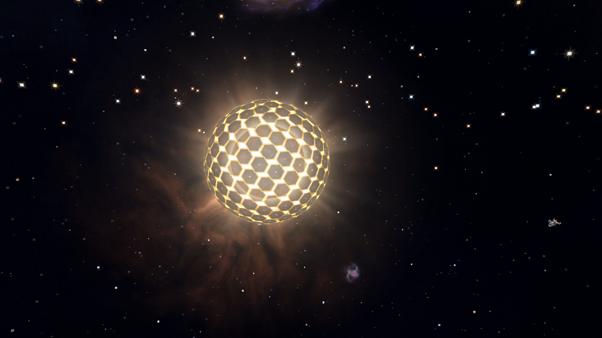